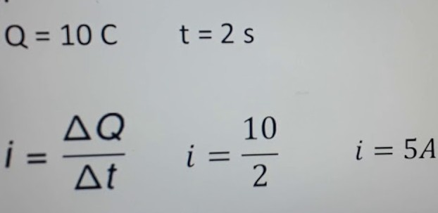
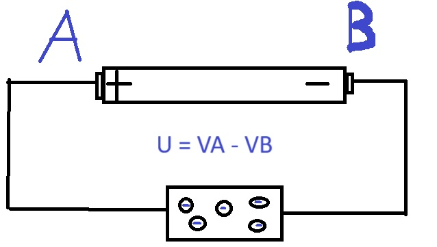

A corrente elétrica é o fluxo ordenado de cargas elétricas, que se movem de forma orientada em um condutor elétrico sólido ou em soluções iônicas. Essa é uma grandeza fundamental em Física.
Os elétrons livres são estimulados a mover-se pelo condutor, o que gera a corrente elétrica por causa de uma diferença de potencial elétrico (ddp ou tensão elétrica) estabelecida entre as pontas do condutor. A ddp é estabelecida no condutor a partir de um campo elétrico que atravessa o material. Esse campo proporciona diferentes níveis de energia potencial, criando, portanto, a tensão necessária para gerar o movimento das cargas elétricas.
O fluxo de cargas elétricas é a quantidade de carga elétrica que se movimenta em um circuito elétrico, em um determinado período de tempo. É também conhecido como corrente elétrica
i - corrente elétrica(A)
ΔQ - Quantidade de carga elétrica(C)
Δt - Intervalo de tempo(s)
Numa secção transversal de um fio condutor passa uma carga de 10 C a cada 2,0 s. A intensidade da corrente elétrica neste fio será de:
Também chamada de tensão, é definida como o trabalho necessário para que uma carga se desloque de um ponto A para um ponto B, quando imersa em um campo elétrico. Quando existe uma certa diferença de potencial entre dois pontos e ligamos esses pontos por meio de um fio condutor, no seu interior irá surgir um movimento ordenado de cargas. Este movimento é chamado de corrente elétrica. Portanto, para um condutor ser percorrido por uma corrente é necessário existir uma diferença de potencial entre seus pontos.
No exemplo a diferença de tensão entre A e B é oque resulta na diferença de potencial
Outra formula para calcular a diferença de potencial:
U - Diferença de potencial(V)
TAB - trabalho da força elétrica para deslocar uma carga de um ponto A para um ponto B (J);
Q - Carga elétrica(C)